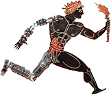

As opposed to traditional robotic applications that demanded for limited interaction and mobility, robots of the next generations will be required to coordinate physical interaction with physical mobility. Interaction always involve two components: the “self” (i.e. the robot) and the “other” (i.e. the interacting agent). Successful and energetically efficient interaction necessarily passes through modelling, estimating and controlling the mutual interaction between the self and the other. In a crescendo of complexity, research is expected to cope with increasingly complicated scenarios. On the one hand, robots (the self) are foreseen to become elastic and compliant. On the other hand, physical interaction is likely to occur not only with rigid and compliant environments but also, on the long run, with humans. Gradually, robots will require advanced decisional autonomy, adaptability and the ability to understand the intention of “others”. To cope with scenarios and embodiments of increasing complexity, my research activities pursue the methodology described above with focus on three main areas: modelling, compliance and control. The final goal of these activities is to endow humanoids with advanced action and interaction capabilities. This goal is pursued with concurrent advances along two different but intertwined directions: on the one hand by advancing the theoretical understanding of the underlying scientific problems; on the other hand by a continuous optimisation and redesign of the existing hardware and software based on sound and solid theoretical bases.
Francesco Nori is a senior research scientist at Deepmind and he is currently the head of the robotics lab. He collaborates with Raia Hadsell, Nando de Freitas and Martin Riedmiller to advance Artificial General Intelligence in the field of robotics.
My research is guided by two underpinning principles: (1) studies on human motor control are relevant for building better performing robots; (2) implementing humanoids contributes to better understanding the human motor control system. Two different tools are at the basis of our research activities. On the one hand, I consider physical interaction as the fundamental means to gather knowledge. On the other hand, control theory is the theoretical toolset, which scientifically grounds the technological implementations.
In the attempt to combine theoretical and technological development, my research activity produces sound theoretical results validated with dependable implementations on real robots. The main outcomes of my research activity are control principles, algorithms, technologies and implementations for compliant robot action and interaction. My background is in engineering with strong competencies in physics, mathematics and computer science. Recently my research interests have expanded in the direction of artificial neural networks which I consider extremely powerful architectures to represent the knowledge gathered via physical interaction.
Previously Francesco led the Dynamic Interaction Control research line at the Italian Institute of Technology. With Giorgio Metta, Lorenzo Natale and Giulio Sandini Francesco is one of the main contributors to the iCub project. The dynamic interaction group activities aim at endowing humanoids with advanced action and physical interaction capabilities.
Francesco was born in Padova in 1976. He received his D.Eng. degree (highest honors) from the University of Padova (Italy) in 2002. During the year 2002 he was a member of the UCLA Vision Lab as a visiting student under the supervision of Prof. Stefano Soatto, University of California Los Angeles. During this collaboration period he started a research activity in the field of computational vision and human motion tracking. In 2003 Francesco Nori started his Ph.D. under the supervision of Prof. Ruggero Frezza at the University of Padova, Italy. During this period the main topic of his research activity was modular control with special attention on biologically inspired control structures. Francesco Nori received his Ph.D. in Control and Dynamical Systems from the University of Padova (Italy) in 2005. In the year 2006 he moved to the University of Genova and started his PostDoc at the laboratory for integrated advanced robotics (LiraLab), beginning a fruitful collaboration with Prof. Giorgio Metta and Prof. Giulio Sandini. In 2007 Francesco Nori has moved to the Italian Institute of technology where in 2015 he was appointed Tenure Track Researcher of the Dynamic and Interaction Control research line. His research interests are currently focused on whole-body motion control exploiting multiple (possibly compliant) contacts. With Giorgio Metta and Lorenzo Natale he is one of the key researchers involved in the iCub development, with specific focus on control and whole-body force regulation exploiting tactile information. Francesco is currently coordinating the H2020-EU project An.Dy (id. 731540); in the past he has been involved in two FP7-EU projects: CoDyCo as coordinator and Koroibot as principal investigator. In 2017 Francesco joined Deepmind where he is collaborating with Raia Hadsell, Nando de Freitas, Martin Riedmiller and Dan Belov. His current interests seamlessly span robotics and artificial intelligence, with applications in both manipulation and locomotion.
| The colleagues I work with: Deepmind. | |
| An open source middleware for robotics: YARP. | |
| Official web site of the iCub robot: iCub. | |
| H2020 project on human-robot interaction: An.Dy. | |
| FP7 EU project Compliant Dynamic Contacts: CoDyCo. | |
|  | FP7 EU project Koroibot Humanoid walking: Koroibot. |